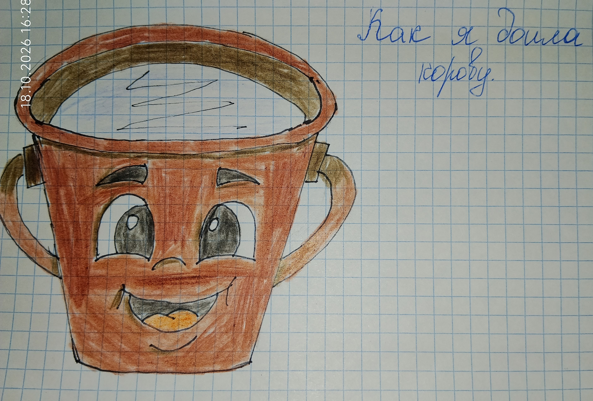

(Рисунок: Ведро молока с глазками)

А однажды мне пришлось доить корову. Бабушка уехала на свадьбу, а корову должна была подоить женщина, но она заболела. И я осталась одна с коровой.
Корова никого, кроме бабушки, не подпускала. Она была своенравная, с характером. Я подошла к ней, взяла ведро, села на скамеечку. Она начала дёргаться, не стояла на месте. Я гладила её, говорила тихо: «Ну, милая, постой, не бойся».
Но она дёрнулась — и опрокинула ведро. А в ведре уже было половина молока! Я чуть не заплакала. Но собралась с духом, успокоила её кое-как, погладила, приласкала. И снова стала доить.
Кое-как я её подоила. Получилось меньше — два литра молока. Но я справилась! Сама!
Когда бабушка вернулась, она удивилась:
— Ты сама подоила?
— Сама, — ответила я, гордая собой.
Бабушка улыбнулась и погладила меня по голове:
— Ну, молодец, помощница растёт.